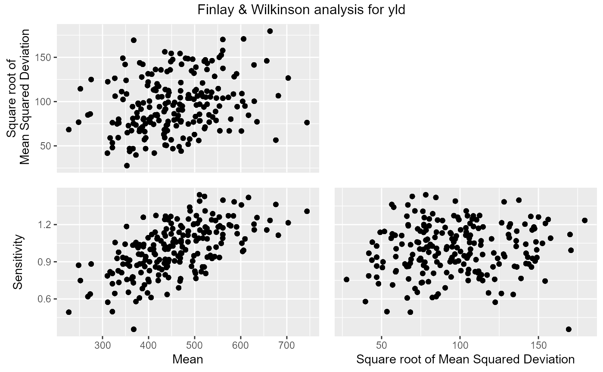

gxeFw.RdThis function performs a Finlay-Wilkinson analysis of data classified by two factors.
gxeFw( TD, trials = names(TD), trait, maxIter = 15, tol = 0.001, sorted = c("descending", "ascending", "none"), genotypes = NULL, useWt = FALSE )
| TD | An object of class |
|---|---|
| trials | A character string specifying the trials to be analyzed. If not supplied, all trials are used in the analysis. |
| trait | A character string specifying the trait to be analyzed. |
| maxIter | An integer specifying the maximum number of iterations in the algorithm. |
| tol | A positive numerical value specifying convergence tolerance of the algorithm. |
| sorted | A character string specifying the sorting order of the estimated values in the output. |
| genotypes | An optional character string containing the genotypes to
which the analysis should be restricted. If |
| useWt | Should weighting be used when modeling? Requires a column
|
An object of class FW, a list containing:
A data.frame containing the estimated values, with the following columns:
genotype The name of the genotype.
sens The estimate of the sensitivity.
se_sens The standard error of the estimate of the sensitivity.
genMean The estimate of the genotypic mean.
se_genMean The standard error of the estimate of the genotypic mean.
MSdeviation The mean square deviation about the line fitted to each genotype
rank The rank of the genotype based on its sensitivity.
A data.frame containing anova scores of the FW analysis.
A data.frame containing the environmental effects, with the following columns:
trial The name of the trial.
envEff The estimate of the environment effect.
se_envEff The standard error of the estimate of the environment effect.
envMean The estimate of the environment mean.
rank The rank of the trial based on its mean.
The object of class TD on which the analysis was performed.
A numerical vector containing the fitted values for the genotypes.
A character string containing the analyzed trait.
A numerical value containing the number of genotypes in the analysis.
A numerical value containing the number of environments in the analysis.
A numerical value containing the tolerance used during the analysis.
A numerical value containing the number of iterations for the analysis to converge.
Finlay, K.W. & Wilkinson, G.N. (1963). The analysis of adaptation in a plant-breeding programme. Australian Journal of Agricultural Research, 14, 742-754.
Other Finlay-Wilkinson:
fitted.FW(),
plot.FW(),
report.FW(),
residuals.FW()
## Run Finlay-Wilkinson analysis on TDMaize. geFW <- gxeFw(TDMaize, trait = "yld") ## Summarize results. summary(geFW)#> Environmental effects #> ===================== #> trial envEff se_envEff envMean se_envMean rank #> 1 HN96b 25.60907 8.035738 481.78976 36.14586 3 #> 2 IS92a 182.25399 8.035738 638.43455 43.17100 2 #> 3 IS94a -35.03586 8.035738 421.14488 36.28094 4 #> 4 LN96a -270.99389 8.035738 185.18705 50.51774 7 #> 5 LN96b -364.58211 8.035738 91.59891 59.74921 8 #> 6 NS92a 595.20401 8.035738 1051.38422 85.77821 1 #> 7 SS92a -88.89550 8.035738 367.28528 37.82240 6 #> 8 SS94a -43.55972 8.035738 412.62103 36.43859 5 #> #> Anova #> ===== #> Df Sum Sq Mean Sq F value Pr(>F) #> genotype 210 13821018 65814 6.3212 < 2.2e-16 *** #> trial 7 127771687 18253098 1753.1259 < 2.2e-16 *** #> Sensitivities 210 5178199 24658 2.3683 < 2.2e-16 *** #> Residual 1260 13118797 10412 #> Total 1687 159889702 94778 #> --- #> Signif. codes: 0 '***' 0.001 '**' 0.01 '*' 0.05 '.' 0.1 ' ' 1 #> #> Most sensitive genotypes #> ======================== #> genotype sens rank se_sens genMean se_genMean MSdeviation #> G091 1.440517 1 0.1308168 510.4500 35.99027 6109.574 #> G194 1.427586 2 0.1308168 521.4250 35.99027 4836.093 #> G055 1.418635 3 0.1308168 616.8500 35.99027 7160.220 #> G042 1.397186 4 0.1308168 561.3875 35.99027 18919.353 #> G103 1.389816 5 0.1308168 510.8000 35.99027 9408.329# \donttest{ ## Create a report summarizing the results. report(geFW, outfile = tempfile(fileext = ".pdf"))# }